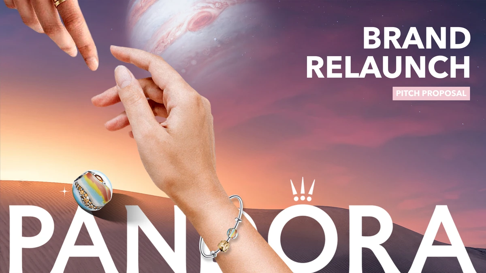
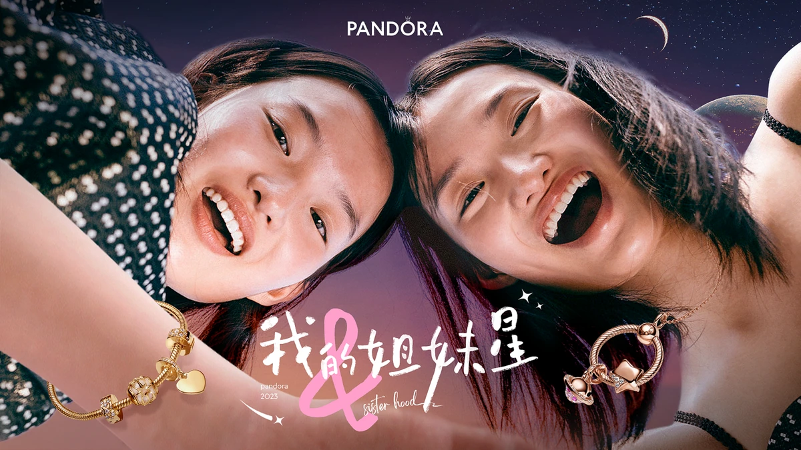
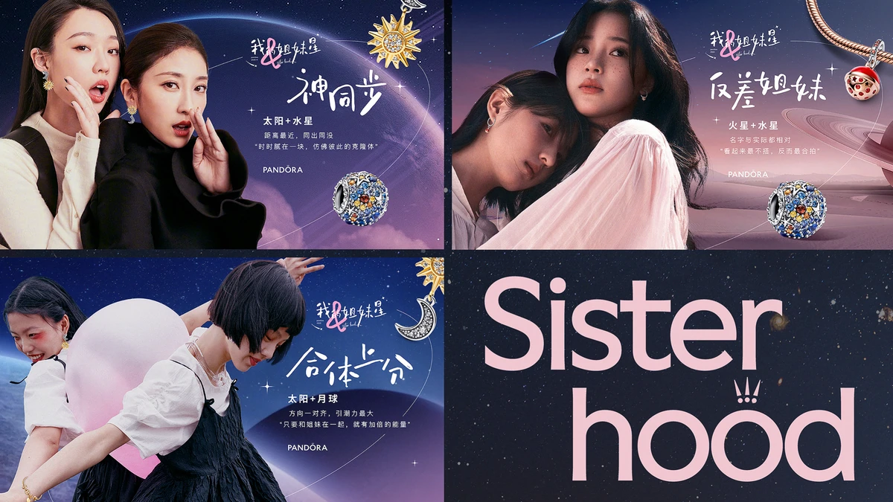
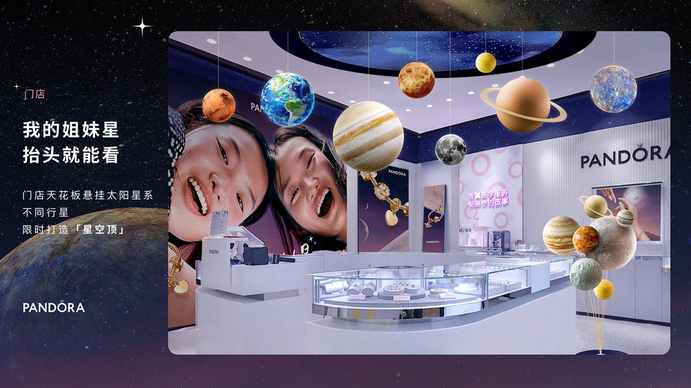
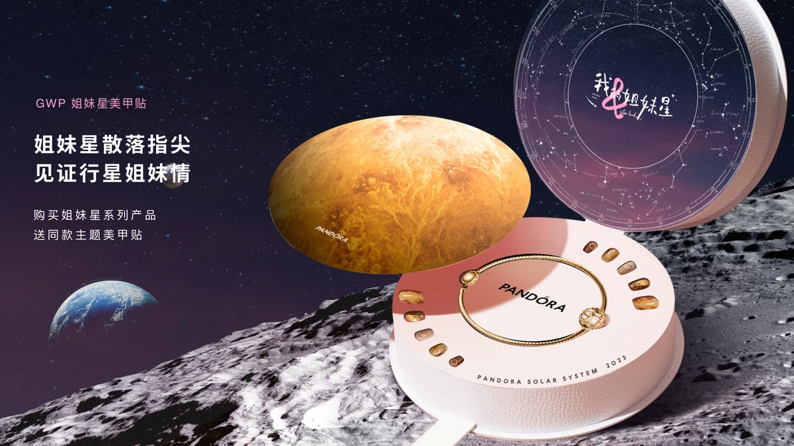

PANDORA 品牌重启提案

- Brand
- PANDORA 潘多拉
- Project
- PANDORA 2023 品牌重启
- Role
- 整体方案内容制作
- Status
- BRAND RELAUNCH PITCH PROPOSAL
项目概览
项目背景
近年来，潘多拉在中国市场面临 18-29 岁核心年轻客群流失、品牌形象老化以及“可定制化”DNA 感知减弱的巨大挑战。基于品牌全球重启大主张“For Every Story”，本项目聚焦中国女性最为珍视的关系之一——“姐妹情（Sisterhood）”。
主要交付物
以“我的姐妹星”为核心沟通主题，将浩瀚宇宙中的行星组合映射为多样的闺蜜关系，为 Pandora 行星系列赋予深刻的情感社交货币属性：核心产品故事、跨界艺术事件、线下体验空间与社媒 UGC 裂变。



